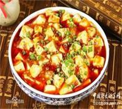
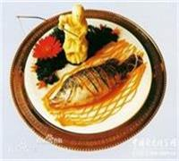
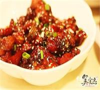
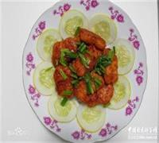
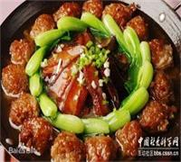
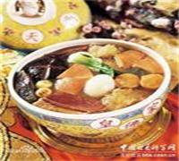
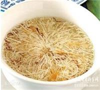

网站首页
八大菜系
成品展示
传统美食
甜点饮品
营养手册







八大菜系
川菜
是中国八大菜系之一，起源于四川、重庆，以麻、辣、鲜、香为特色。川菜的出现可追溯至秦汉，在宋代已经形成流派，在明末清初辣椒传入中国一段时间后，川菜进行了大革新，逐渐发展成了现在的川菜。原料多选山珍、江鲜、野蔬和畜禽。善用小炒、干煸、干烧和泡、烩等烹调法。以“味”闻名，味型较多，富于变化，以鱼香、红油、怪味、麻辣较为突出。川菜的风格朴实而又清新，具有浓厚的乡土气息。蓉派川菜精致细腻，渝派川菜大方粗犷。著名菜品：水煮肉片、鱼香肉丝、回锅肉、盐煎肉、宫保鸡丁、干煸鳝片、辣子鸡丁、辣子肥肠、麻婆豆腐、水煮鱼、泡椒肉丝、青椒肉丝……成渝两地的小吃也归类于川菜。川菜系因此具有取材广泛、调味多样、菜式适应性强三个特征。由筵席菜、大众便餐菜、家常菜、三蒸九扣菜、风味小吃等五个大类组成一个完整的风味体系。在国际上享有“食在中国，味在四川”的美誉。其中最负盛名的菜肴有：干烧岩鲤、干烧桂鱼、廖排骨、鱼香肉丝、怪味鸡、宫保鸡丁、粉蒸牛肉、麻婆豆腐、毛肚火锅、干煸牛肉丝、夫妻肺片、灯影牛肉、担担面、赖汤圆、龙抄手等。川菜中六大名菜是：鱼香肉丝、宫保鸡丁、夫妻肺片、麻婆豆腐、回锅肉、东坡肘子。
鲁菜
起源于山东的齐鲁风味，是中国传统四大菜系（也是八大菜系）中唯一的自发型菜系（相对于淮扬、川、粤等影响型菜系而言），是历史最悠久、技法最丰富、难度最高、最见功力的菜系。特点是清香、鲜嫩、味醇而著名，十分讲究清汤和奶汤的调制，清汤色清而鲜，奶汤色白而醇。烟台福山为胶东菜发源地。以烹制各种海鲜而驰名，口味清淡。济南历城为济南菜发源地。擅长爆、烧、炸、炒，口味偏重。宋代以后鲁菜就成为“北食”的代表。明、清两代，鲁菜已成宫廷御膳主体，对京、津和东北各地的影响较大。是八大菜系之首。一般认为鲁菜内部分为两大派系，分别以济南和胶东两地的地方菜演化而成。有时也分为四大派系，为以上两种加上孔府菜和药膳系（食疗养生），都蜚声海内外。
湘菜
是中国历史悠久的一个地方风味菜。湘菜特别讲究调味，尤重酸辣、咸香、清香、浓鲜。夏天炎热，其味重清淡、香鲜。冬天湿冷，味重热辣、浓鲜。湘菜调味，特色是“酸辣”，以辣为主，酸寓其中。“酸”是酸泡菜之酸，比醋更为醇厚柔和。湖南大部分地区地势较低，气候温暖潮湿，古称“卑湿之地”。而辣椒有提热、开胃、祛湿、祛风之效，故深为湖南人民所喜爱。剁椒经过乳酸发酵，具有开胃、养胃的作用。湖南菜最大特色一是辣，二是腊。著名菜点有：东安子鸡、剁椒鱼头、腊味合蒸、组庵鱼翅、冰糖湘莲、红椒腊牛肉、发丝牛百页、浏阳蒸菜、干锅牛肚、平江火焙鱼、平江酱干、吉首酸肉、湘西外婆菜、换心蛋等。长沙小吃是中国四大小吃之一，主要品种有糯米粽子、麻仁奶糖、浏阳茴饼、浏阳豆豉、臭豆腐、春卷、口味虾、糖油粑粑等。
粤菜
即广东菜，发源于岭南。由广州菜（也称广府菜）、潮州菜（也称潮汕菜）、东江菜（也称客家菜）三种地方风味组成，三种风味各具特色。粤菜特点是丰富精细的选材和清淡的口味。粤菜可选原料多，自然也就精细。粤菜讲究原料的季节性，“不时不吃”。吃鱼，有“春鳊秋鲤夏三犁（鲥鱼）隆冬鲈”；吃蛇，则是“秋风起三蛇肥，此时食蛇好福气”；吃虾，“清明虾，最肥美”；吃蔬菜要挑“时菜”，是指合季节的蔬菜，如菜心为“北风起菜心最甜”。除了选原料的最佳肥美期之外，粤菜还特别注意选择原料的最佳部位[9] 。粤菜味道讲究“清、鲜、嫩、滑、爽、香”，追求原料的本味、清鲜味，粤菜调味品种类繁多，遍及酸、甜、苦、辣、咸、鲜。但只用少量姜葱、蒜头做“料头”，而少用辣椒等辛辣性作料，也不会大咸大甜。这种追求清淡、追求鲜嫩、追求本味的特色，既符合广东的气候特点，又符合现代营养学的要求，是一种科学的饮食文化。
闽菜
是以闽东、闽南、闽西、闽北、闽中、莆仙地方风味菜为主形成的菜系。以闽东和闽南风味为代表。闽菜清鲜，淡爽，偏于甜酸。尤其讲究调汤，汤鲜、味美，汤菜品种多，具有传统特色。闽东菜有“福州菜飘香四海，食文化千古流传”之称，有以下鲜明特征：一为刀工巧妙，寓趣于味；二为汤菜众多，变化无穷；三为调味奇特，别是一方。闽菜最突出的烹调方法有醉、扣、糟等，其中最具特色的是糟，有炝糟、醉糟等。闽菜中常使用的红糟，由糯米经红曲发酵而成，糟香浓郁、色泽鲜红。糟味调料本身也具有很好的去腥臊、健脾肾、消暑火的作用，非常适合在夏天食用。
徽菜
起源于安徽省徽州地区，是中国八大菜系之一。因为徽州人喜爱常年饮茶，所以徽菜一般油大，所谓重油、重色、重火工，芡重，色深，味浓。同时由于徽州多山多水，徽菜以烹饪山珍水产见长，代表菜肴有“毛峰熏鲥鱼”、“火腿炖甲鱼”、“腌鲜鳜鱼”、“黄山炖鸽”、“雪冬烧山鸡”等。徽菜擅长烤、炖，讲究火功，其特点是芡大油重。徽菜的主要特点：烹调方法上擅长烧、炖、蒸，而爆、炒菜少，重油、重色，重火功。主要名菜有"火腿炖甲鱼"，"红烧果子狸"、"腌鲜鳜鱼"、"黄山炖鸽"等上百种。徽菜的形成与江南古徽州独特的地理环境、人文环境、饮食习俗密切相关。绿树丛荫、沟壑纵横、气候宜人的徽州自然环境，为徽菜提供了取之不尽，用之不竭的徽菜原料。得天独厚的条件成为徽菜发展的有力物质保障，同时徽州名目繁多的风俗礼仪、时节活动，也有力的促进了徽菜的形成和发展。在绩溪，民间宴席中，县城有六大盘、十碗细点四，岭北有吃四盘、一品锅，岭南有九碗六、十碗八等。
苏菜
即江苏菜系。江苏菜系在烹饪学术上一般称为“苏菜”，由南京、徐海、淮扬和苏南四种风味江组成，是宫廷第二大菜系，今天国宴仍以淮扬菜系为主。江苏菜系选料讲究，刀工精细，口味偏甜，造型讲究，特色鲜明。由于江浙地区气候潮湿，又靠近沿海，所以往往会在菜中增加糖分，来去除湿气。江苏菜很少放辣椒，因为吃辣椒虽然能够去除湿气，但是容易上火。因此，江浙菜系是以偏甜为主。苏菜风格源于宋代开封，宋室南迁带入并逐渐占据主要地位。今天开封饮食仍然与江苏有诸多相同之处，如小笼包、桂鱼等等。有人用一首民谣概括苏州小吃：姑苏小吃名堂多，味道香甜软酥糯。生煎馒头蟹壳黄，老虎脚爪绞连棒。千层饼、蛋石衣，大饼油条豆腐桨。葱油花卷葱油饼，经济实惠都欣赏。香菇菜包豆沙包，小笼馒头肉馒头。六宜楼去买紧酵，油里一氽当心咬。茶叶蛋、焐熟藕，大小馄饨加汤包。高脚馒头搭姜饼，价钿便宜肚皮饱。芝麻糊、糖芋艿，油氽散子白糖饺。鸡鸭血汤豆腐花，春卷烧卖八宝饭。糯米粢饭有夹心，各色浇头自己挑。锅贴水饺香喷喷，桂花藕彩海棠糕。臭豆腐干粢饭团，萝卜丝饼三角包。蜜糕方糕条头糕，猪油年糕糖年糕。汤团麻团粢毛团，双酿团子南瓜团。酒酿园子甜酒酿，定胜糕来梅花糕。笃笃笃笃卖糖粥，小囡吃仔勿想跑。赤豆粽子有营养，肉粽咸鲜味道好。鸡头米、莲子羹，糖炒栗子桂花香。枣泥麻饼是特产，卤汁豆腐干名气响。
浙菜
重视其原料的鲜、活、嫩，以鱼、虾、禽、畜、时令蔬菜为主，讲究刀工，口味清鲜，突出本味。其制作精细，变化多样，并喜欢以风景名胜来命名菜肴，烹调方法以爆、炒、烩、炸为主，清鲜爽脆。宁波菜咸鲜合一，以烹制海鲜见长，讲究鲜嫩软滑，重原味，强调入味。口味“甜、咸、鲜、臭”，以炒、蒸、烧、炖、腌制见长，讲求鲜嫩软滑，注重大汤大水，保持原汁原味。温州菜素以“东瓯名镇”著称，也称“瓯菜”，匝菜则以海鲜人馔为主，口味清鲜，淡而不薄，烹调讲究“二轻一重”，即轻油、轻芡、重刀工。都自成一体，别具一格。而金华菜则是浙菜的重要组成部分。烹调方法，以烧、蒸、炖、煨、炸为主。金华菜以火腿菜为核心，在外地颇有名气。仅火腿菜品种就达300多道。火腿菜烹饪不宜红烧、干烧、卤烩，在调配料中忌用酱油、醋、茴香，桂皮等；也不宜挂糊、上浆，讲究保持火腿独特色香味。浙江点心中的团、糕、羹、面品种多，口味佳。例如,嘉兴肉粽、宁波汤圆、绍兴臭豆腐、舟山虾爆鳝面、湖州馄饨等等。名菜名点有：龙井虾仁、西湖莼菜、虾爆鳝背、西湖醋鱼、冰糖甲鱼、剔骨锅烧河鳗、苔菜小方烤、雪菜大黄鱼、腐皮包黄鱼、网油包鹅肝、荷叶粉蒸肉、黄鱼海参羹、彩熘全黄鱼等等。